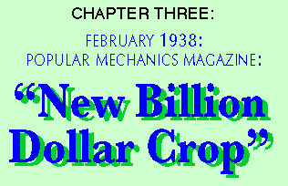
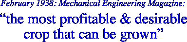

|  |
| |
illustration © Stephen Saunders


Modern technology was about to be applied to hemp production, making it the number one agricultural resource in America. Two of the most respected and influential journals in the nation, Popular Mechanics and Mechanical Engineering, forecast a bright future for American hemp. Thousands of new products creating millions of new jobs heralded the end of the Great Depression. Instead hemp was persecuted, outlawed, and forgotten at the bidding of W. R. Hearst who branded hemp the “Mexican killer weed, marijuana.”
As early as 1901 and continuing to 1937, the U.S. Department of Agriculture repeatedly predicted that, once machinery capable of harvesting, stripping, and separating the fiber from the pulp was invented or engineered, hemp would again be America’s number one farm crop. The introduction of G. W. Schlichten’s decorticator in 1917 nearly fulfilled this prophesy. (See the related readings in the previous chapter and Appendix I of the paper version of this book)
The prediction was reaffirmed in the popular press when Popular Mechanics published its February, 1938, article “Billion-Dollar Crop.” The first reproduction of this article in more than 50 years was in the original edition of this book. The article is reproduced in the paper version of this book exactly as it was printed in 1938 (and word for word here in the electronic version).
Because of the printing schedule and deadline, Popular Mechanics prepared this article in the Spring of 1937, when cannabis hemp for fiber, paper, dynamite, and oil was still legal to grow and was, in fact, an incredibly fast-growing industry.
Also reprinted in this Chapter is an excerpt from the Mechanical Engineering article about hemp, published the same month. It originated as a paper presented a year earlier at the Feb. 26, 1937, Agricultural Processing Meeting of the American Society of Mechanical Engineers, New Brunswick, New Jersey.
Reports from the USDA during the 1930s, and Congressional testimony in 1937, showed that cultivated hemp acreage had been doubling in size in America almost every year from the time it hit its bottom acreage, 1930—when 1,000 acres were planted in the U.S.—to 1937—when 14,000 acres were cultivated—with plans to continue to double that acreage annually in the foreseeable future.
As you will see in these articles, the newly mechanized cannabis hemp industry was in its infancy, but well on its way to again becoming America’s largest agricultural crop. And, in light of subsequent developments (e.g., biomass energy technology, building materials, etc.), we now know that hemp is the world’s most important ecological resource and therefore, potentially our planet’s singlelargest industry.
The Popular Mechanics article was the very first time in American history that the term “billion-dollar”* was ever applied to any U.S. agricultural crop!
* Equivalent to $20-$40 billion now.
Experts today conservatively estimate that, once fully restored in America, hemp industries will generate $500 billion to a trillion dollars per year, and will save the planet and civilization from fossil fuels and their derivatives—and from deforestation!
If Anslinger, DuPont, Hearst, and their paid-for (know it or not) politicians had not outlawed hemp—under the pretext of marijuana (see chapter 4, “Last Days of Legal Cannabis”)—and suppressed hemp knowledge from our schools, researchers, and even scientists; the glowing predictions in these articles would already have come true by now—and more benefits than anyone could then envision—as new technologies continue to develop.
As one colleague so aptly put it: “These articles were the last honest word spoken on hemp’s behalf for over 40 years.…”
alternative version of a picture
the authorized on-line version of Jack Herer’s “The Emperor Wears No Clothes”
| previous page | next page |
|
 |
 |
 |
 |